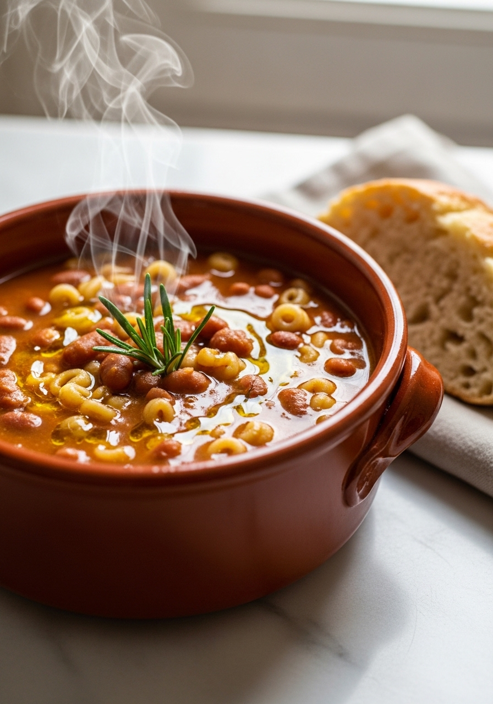
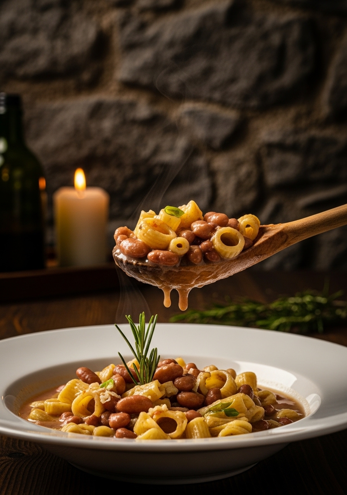

La pasta e fagioli è forse il piatto più umile e più amato della cucina italiana — un piatto di sopravvivenza diventato capolavoro. La versione napoletana è la più famosa: densa come una crema, con i fagioli borlotti parzialmente frullati che creano una consistenza vellutata, la pasta mista che si cuoce direttamente nel brodo di fagioli, il rosmarino che profuma tutta la casa. Non è una minestra, non è un primo, non è un secondo: è un piatto unico che basta a sé stesso e nutre l'anima.

TradizioneLa pasta e fagioli è nata dalla necessità. Nell'Italia rurale del passato, fagioli e pasta erano gli ingredienti più economici e nutrienti a disposizione delle famiglie contadine. A Napoli, dove la miseria era parte quotidiana della vita nei vicoli, questo piatto è diventato un'istituzione: il 'piatto del proletariato' che nutriva famiglie intere con pochissimo. I macellai napoletani conservavano le cotiche di maiale e le ossa avanzate proprio per aggiungere profondità al brodo della pasta e fagioli — e così questo piatto di sopravvivenza è diventato, nei secoli, un capolavoro di sapori. Oggi la pasta e fagioli è servita nei ristoranti stellati e nelle trattorie popolari con la stessa dignità. Il segreto è sempre lo stesso: tempo, pazienza e buoni ingredienti.
La differenza tra fagioli secchi e fagioli in scatola in questo piatto è enorme. I fagioli secchi, cotti lentamente nella loro acqua, rilasciano una quantità di amido naturale e sapore che i fagioli in scatola (già cotti e conservati in acqua) non possono replicare. L'acqua di cottura dei fagioli secchi è il vero 'brodo segreto' della pasta e fagioli napoletana — densa, amidacea, con un sapore terroso e vegetale che forma la base dell'intera zuppa. I fagioli borlotti sono la scelta tradizionale napoletana: la loro consistenza cremosa e il loro sapore delicatamente dolce li rendono perfetti per questo piatto. I fagioli cannellini danno una versione più delicata; i fagioli bianchi di Spagna una più robusta.
Ingredienti
Procedimento

La pasta e fagioli si conserva in frigorifero per 3-4 giorni. Il giorno dopo è ancora più buona — i sapori si fondono e si intensificano durante la notte. Quando la riscaldi, aggiunge sempre un mestolo di acqua calda o brodo perché si addensa molto. La versione veneta aggiunge pancetta affumicata nel soffritto; quella toscana usa fagioli cannellini e salvia invece del rosmarino; quella romana include rigatoni e una crosta di Parmigiano intera nella zuppa. La versione più 'ricca' napoletana aggiunge cotiche di maiale o piedino di maiale per un sapore più profondo — tipica dei giorni di festa. Tutte le versioni sono autentiche: la pasta e fagioli è il piatto dell'Italia intera.
Sì — i fagioli cannellini danno una versione più delicata e cremosa; i fagioli di Spagna una più rustica e saporita; i fagioli neri una versione moderna e di carattere. I borlotti restano la scelta tradizionale napoletana per il loro equilibrio perfetto tra cremosità e sapore.
La pasta assorbe liquido continuando a cuocere. Se la zuppa è troppo densa, aggiungi acqua calda o brodo caldo mescolando fino alla consistenza desiderata. La pasta e fagioli napoletana deve essere 'azzeccata' — densa — ma non deve diventare una palla solida.
Sì, ma con un accorgimento: cuoci i fagioli e il soffritto in anticipo (si conserva 3-4 giorni), ma aggiungi la pasta solo al momento di servire. La pasta già cotta diventa molle e gommosa il giorno dopo.
No — la ricetta napoletana tradizionale più povera è rigorosamente vegetariana (olio, verdure, fagioli, pasta). La pancetta o le cotiche di maiale sono aggiunte delle versioni più 'ricche'. Omettila per una versione vegana sostituendo il Parmigiano con lievito alimentare in scaglie.
La pasta mista — i scarti e gli avanzi di diversi formati mescolati insieme — è la scelta tradizionale napoletana autentica. I ditalini rigati, i tubetti, i ditali sono le alternative più usate. Lo spaghetto spezzato è comune in alcune zone della Campania. Evita la pasta lunga intera: è difficile da mangiare nella zuppa.